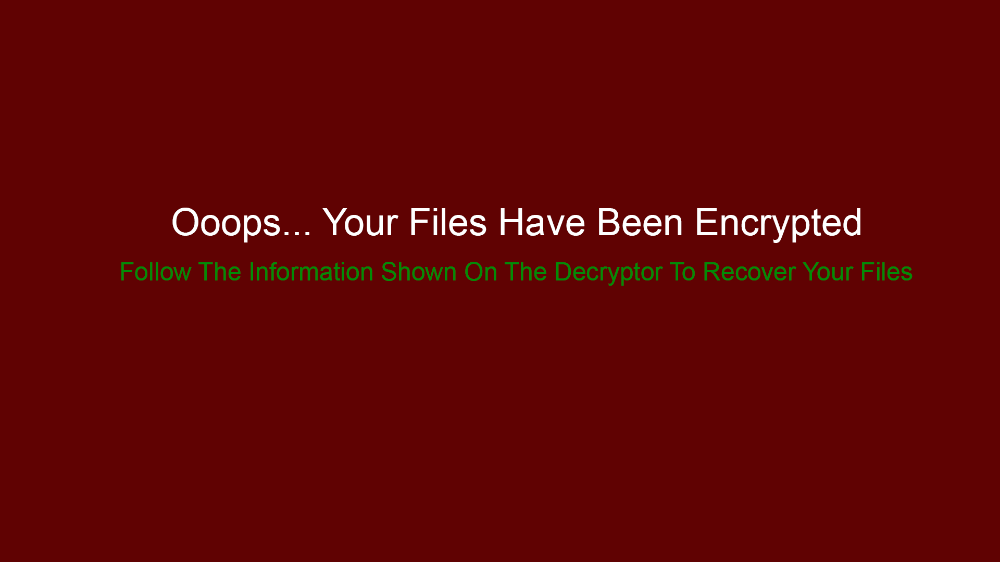
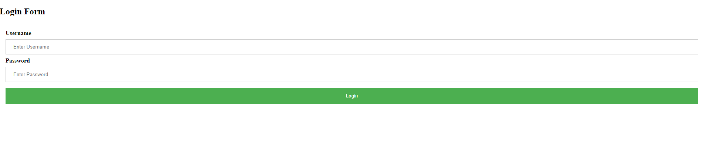
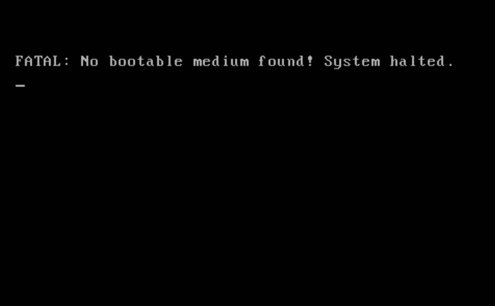
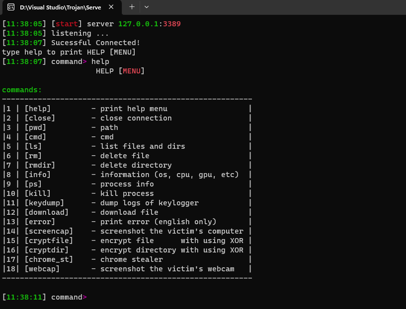

A Windows-based antivirus application developed in C++ that scans files and directories for known malware. It uses MD5 hashing to detect threats and provides real-time updates and detailed scan results.
A C++ program designed to encrypt files on a Windows system, making them inaccessible until a decryption key is provided. The program uses a custom encryption algorithm and appends a `.tu` extension to encrypted files. It demonstrates ransomware functionality for educational purposes only.
This project involves a simulated phishing website designed to capture login credentials by mimicking legitimate sites. It demonstrates how phishing attacks work by tricking users into entering their usernames and passwords, which are then sent to a remote server.
Developed a C++ application that triggers a Blue Screen of Death (BSoD) on a Windows system. This project demonstrates the use of NT API functions to simulate a critical system error, causing the operating system to crash and display a BSoD. The application is intended for educational purposes to showcase how critical system errors impact the OS.
This C++ program is a malicious tool designed to overwrite the Master Boot Record (MBR) of a system, potentially rendering the computer unbootable. In addition to the MBR overwrite, it creates various graphical and auditory disturbances on the desktop to disrupt the user experience. The program includes random color changes, graphical noise, and beeping sounds to cause confusion and frustration.
Developed a sophisticated Trojan horse capable of executing a range of malicious activities on a Windows system. This Trojan includes features such as remote command execution, file and folder management, system information retrieval, keylogging, error display, screenshot capture, data extraction from web browsers, and webcam access. It is designed for educational purposes to demonstrate the potential impacts and risks associated with such malware.